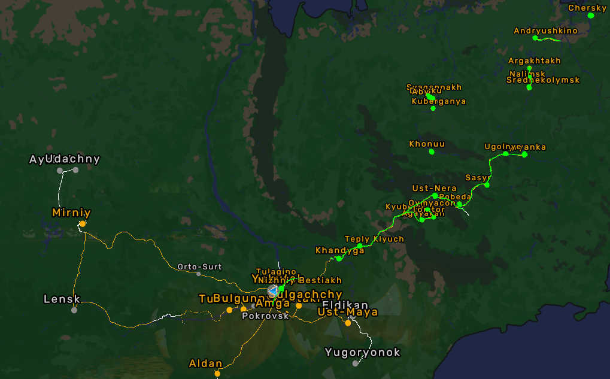

Far East Russia (FER)
The core ETS2 map expansion focusing on Russia's Far East. Download, install, and hit the road.
Latest Release
Description
FER brings authentic roads, cities, and logistics across the Far East. Optimized for stability in convoy and single player.
- Hand-crafted cities and rural settlements
- Balanced economy and depots
- Carefully tuned traffic and signage

Map Coverage
- 3000+ km of driveable roads, with more being rebuilt
- 20+ detailed cities and settlements and more being rebuilt
- Green - Rebulded areas
Load Order
- Background (if used)
- FER - Chukotka RC
- Chukotsky autonomny okrug addon
- FER - OTGR RC
- Far East Russia
- Trans-siberian truckway
- Off The Grid Russia